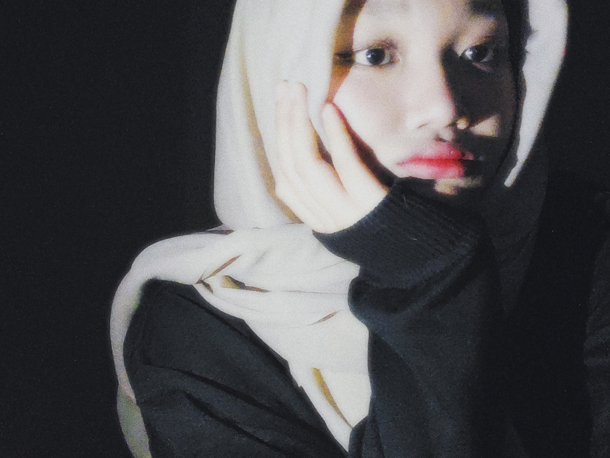

About Me?
Perkenalkan nama aku Adnin Atmadewati Ashrini biasa dipanggil Anin. Aku lahir di Jakarta tanggal 18 Juli 2005 akan tetapi sejak duduk dikursi taman kanak kanak aku pindah ke Bogor dan tinggal disana sampai saat ini. Aku berasal dari SMK Plus Pelita Nusantara jurusan Rekayasa Perangkat Lunak. Kepribadian aku cenderung pendiam kalau kamu belum kenal yaa tapi kalau udah kenal dan deket aku orangnya asik kok, asik sendiri? Ngga dongg.